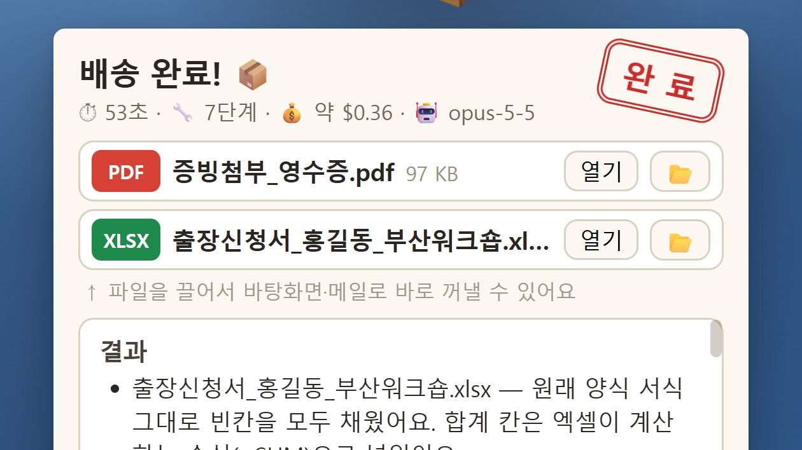

실제로 맡겨 본 출장신청서

넣은 것 출장신청서_양식.xlsx · KTX_승차권_영수증.png · 호텔_영수증.png · 출장_안내_메일.txt
받은 것 출장신청서_홍길동_부산워크숍.xlsx · 증빙첨부_영수증.pdf
채운 값 교통비 119,600원 · 숙박비 132,000원 · 일비 50,000원 · 식비 50,000원 · 합계 351,600원
확인 필요 신청일 · 서명 칸 · 일비 지급 기준
걸린 시간 53초 · API 기준 약 0.36달러